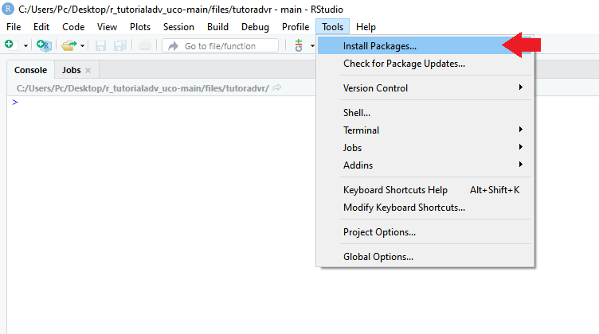
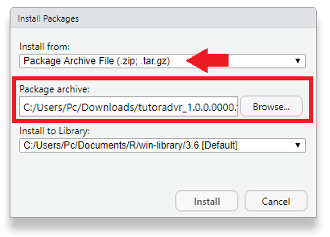
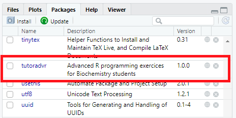

Realización de ejercicios
Paquete learnr
Para crear los ejercicios finales de algunos apartados hemos empleado el paquete "learnr". Este nos permite crear tutoriales interactivos en formato RMarkdown, un formato de edición de texto que nos permite incluir código desde R (de hecho, este tutorial al completo está escrito en formato RMarkdown).
Estos tutoriales permiten el uso de multitud de objetos, como cuadros de código en R, preguntas tipo test, imágenes y más, como herramienta de aprendizaje mientras programas. Si has ido resolviendo los ejercicios propuestos al final de cada apartado conforme avanzabas en el tutorial ya habrás visto cómo funciona y el potencial que tiene como herramienta interactiva.
¿Cómo hacer los ejercicios de repaso?
En primer lugar, es necesario que instales y actives learnr:
1 2 | |
A continuación, necesitas descargarte el paquete "tutoradvr", que incluye los ejercicios de todos los apartados. Una vez descargado (no debes descomprimirlo), debes instalarlo en R de la siguiente manera:
- En RStudio, abre la pestaña "Tools" y selecciona "Install packages...".

-
Se abrirá una ventana. En el cuadro "Install from", selecciona la opción "Package Archive File (.zip; .tar.gz)." Esto permite instalar los paquetes de forma local, sin recurrir a repositorios externos como CRAN.
-
Luego, en el cuadro de "Package archive" busca donde hayas descargado el paquete (en nuestro caso, la carpeta de descargas) y selecciónalo.

Aparecerán una serie de líneas de comando en la consola, tras lo cual el paquete quedará instalado. Puedes comprobarlo en la pestaña "Packages":

Finalmente, activa el paquete usando el comando library():
1 | |
Comandos por apartado
Para realizar los ejercicios, simplemente ejecuta los siguientes comandos en la consola:
1 2 3 | |
1 2 3 | |
1 2 3 | |
1 2 3 | |
Referencias
- Tutorial de programación en R orientado al estudiante de Bioquímica; Ismael Sánchez Pareja
- Interactive Tutorials for R; Garrett Grolemund
- Generando tutoriales interactivos con el paquete learnr; Yanina Bellini Saibene
- How to deliver learnr tutorials in a package; Desirée De Leon
- RStudio para Estadística Descriptiva en Ciencias Sociales; Boccardo Bosoni et al.